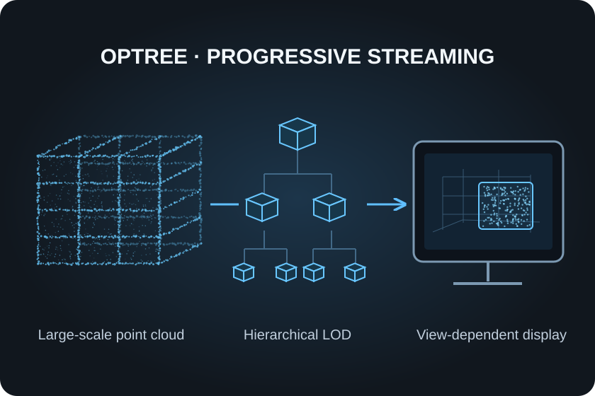

2026Lightweight streaming
Lightweight streaming
of large-scale point clouds
Explore ultra-scale point clouds where you need them. Our proprietary Optree LOD engine presents an overview first, then progressively loads data for the current view and level of detail.
Explore the overview→Data for the current view→Review regions of interest
Explore Optree technology